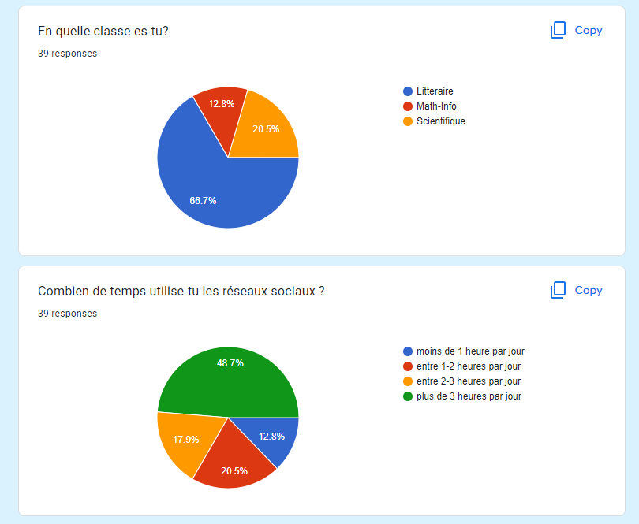
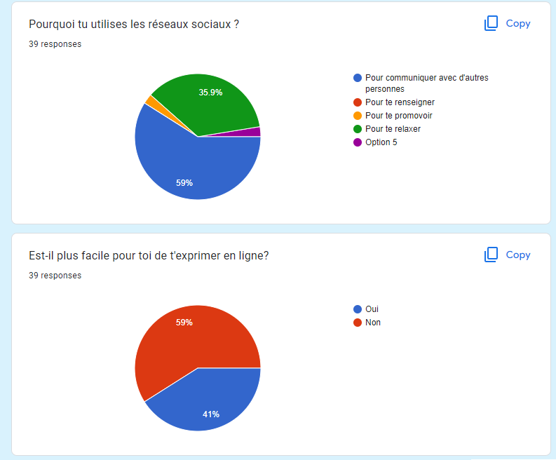
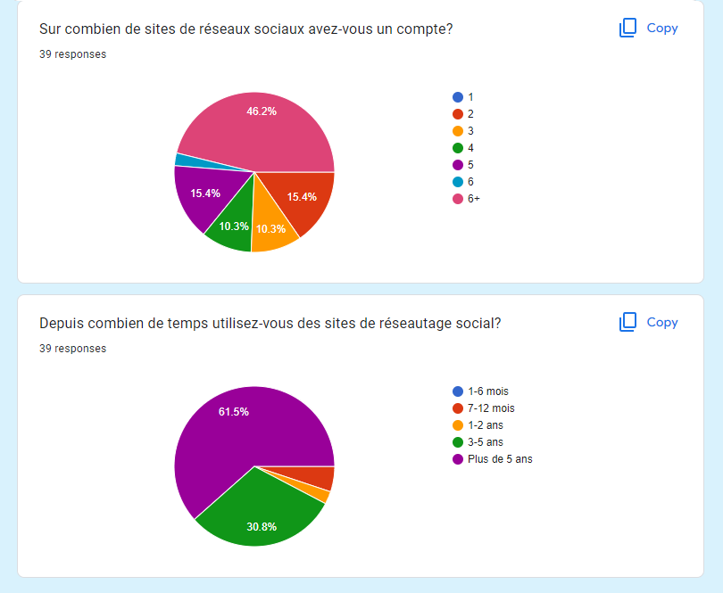

La dépendance au jeu vidéo peut être un problème pour plusieurs raisons :

Impact sur la santé mentale : Les personnes dépendantes aux jeux vidéo peuvent éprouver des symptômes tels que la dépression, l'anxiété, l'isolement social et la dégradation de la qualité de vie.
Impact sur la santé physique : Les personnes dépendantes aux jeux vidéo peuvent passer de longues heures devant un écran, ce qui peut conduire à une fatigue oculaire, une mauvaise posture, une prise de poids et d'autres problèmes de santé
Problèmes scolaires et professionnels : La dépendance au jeu vidéo peut entraîner une baisse des performances scolaires ou professionnelles, car les personnes concernées peuvent passer moins de temps à étudier ou travailler.
Problèmes financiers : Les personnes dépendantes aux jeux vidéo peuvent dépenser des sommes considérables d'argent pour acheter des jeux ou des extensions, ce qui peut les mettre en difficulté financière.
Impact sur les relations sociales : La dépendance au jeu vidéo peut conduire à un isolement social, ce qui peut avoir un impact négatif sur les relations avec la famille et les amis.

La technologie peut avoir un impact négatif sur le sommeil de plusieurs manières :
Lumière bleue : Les écrans de nos appareils émettent une lumière bleue qui peut supprimer la production de mélatonine, une hormone qui aide à réguler notre cycle de sommeil. En regardant des écrans avant de dormir, nous pouvons donc avoir plus de difficulté à nous endormir.
Stimulation mentale : L'utilisation d'appareils électroniques tels que les smartphones ou les tablettes peut stimuler notre cerveau et nous empêcher de nous détendre avant de dormir.
Addiction : L'utilisation excessive des médias sociaux, des jeux vidéo ou des autres applications peut conduire à une addiction qui peut perturber le cycle de sommeil.
Distractions sonores : Les notifications, les messages ou les appels sur nos appareils électroniques peuvent interrompre notre sommeil.
Habitudes de sommeil perturbées : L'utilisation d'appareils électroniques avant de dormir peut perturber notre routine de sommeil et nous amener à nous coucher plus tard que d'habitude, ce qui peut affecter la qualité de notre sommeil.
Les réseaux sociaux
La technologie est l’ensemble des connaissances et des techniques qui sont appliquées de manière ordonnée pour atteindre un certain objectif ou résoudre un problème. La technologie fait partie de nos vies; dans le monde, par exemple, plus de trois milliards de personnes utilisent Internet. Par rapport à 2000, en 2015, le nombre d’internautes a augmenté de 806%. Ces chiffres nous font réfléchir aux effets de la technologie sur nous. Les avantages d’Internet sont que nous pouvons communiquer avec d’autres personnes indépendamment de la distance, du fuseau horaire, nous pouvons trouver toutes les informations que nous voulons en quelques minutes. Les plus touchés sont les enfants et les adolescents qui s’immergent et se confondent dans et avec le monde virtuel, oubliant plus tard quelle est leur véritable personnalité prise par le « microbe virtuel. Les enfants font des comptes sur les réseaux sociaux en se présentant comme des adultes, ils mettent des photos fictives et des métiers, ils créent une personnalité qu’ils veulent, c’est pourquoi beaucoup évitent de sortir ensemble au détriment de se « cacher » derrière un écran. Malheureusement, tout est devenu un xérox de sentiments, de vêtements, de personnalité, nous copions des films du net, nous copions des commentaires pour les thèmes de la langue roumaine, nous copions des attitudes et des idées. Les jeunes ne savent plus comment communiquer avec leur famille, avec leurs amis et les seules entités avec lesquelles ils entrent en contact sont d’autres pièces d’identité. L’homme par nature est un être social. L’humanité a évolué en raison du fait que les individus ont créé des liens les uns avec les autres, principalement par le biais d’interactions directes. Nous sommes tous témoins et directement impliqués dans ce qui s’est passé après l’explosion de la technologie informatique et de l’accessibilité à Internet, dans le sens où les distances n’existent plus et que les gens peuvent communiquer avec les autres dans des endroits difficiles d’accès. Même si les gens communiquent moins en face à face, environ la moitié des répondants pensent que leurs relations ne sont pas du tout affectées, mais, au contraire, elles sont encore meilleures parce qu’elles sont connectées en ligne avec leurs proches.
GRAPHIQUES
  Dans ce diagramme, nous pouvons voir que passer du temps sur les réseaux sociaux est la principale activité dans la vie des jeunes.
Le but principal des réseaux est de communiquer avec des amis.
Pourtant, les jeunes préfèrent la communication en personne.